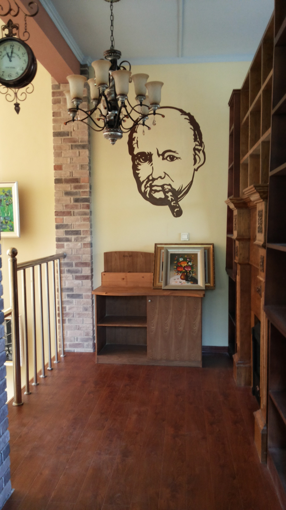

加盟咖啡馆管理与服务您的当前位置:首页>罗纳动态>加盟咖啡馆管理与服务
-

面对僵局,咖啡加盟店下一步该如何发展?
2016-11-08
咖啡加盟行业对我们来说都不陌生，它既像随时都在我们身边，又像和我们有点距离感;它既让很多咖啡创业者，很多咖啡加盟商抱...
-

你不懂得在咖啡加盟店喝咖啡也是一种享受
2016-11-08
现如今咖啡馆已经成为一种交际场合，人们不只来享用咖啡，更享用这儿的环境和氛围!可能是约上朋友谈谈心，也可能是来这儿赶...
-
加盟咖啡或单干，你该怎么选？
2016-11-08
餐饮行业本身是刚需、且具有门槛低、资金周转快等特点，一直是广大创业者首选的创业方向。可是餐饮创业，究竟应该选择单干还...
-

咖啡加盟店每年营业额增长依照竟争对手的情形及经济指标来制定
2016-11-08
三、数字目标管理 咖啡店主要目标内容 (I)iv 0.彻i门标。i5业额是衡址一家咖啡店经i It好坏的一个址从...